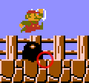
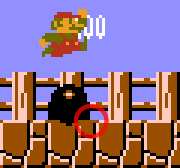

Judges
Judges is the name given to a mechanic in 8-1 where you can save (good judges) or lose (bad judges) a frame depending on the frame you exit 4-2. This one frame is the difference between saving or losing a framerule if you play through the level without slowing down.
Determining judges
Bop the first buzzy beetle in the level on the left half. It is a four frame window to full jump and hit it at the right spot.

